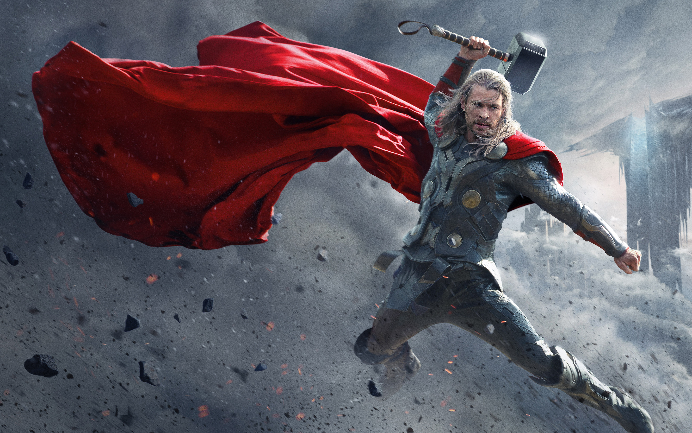

black widow

Thor, le dieu du Tonnerre, est un puissant guerrier d’Asgard dans l’univers Marvel. Fils d’Odin, il possède une force surhumaine, maîtrise la foudre et utilise des armes légendaires comme Mjolnir et Stormbreaker.
Malgré son arrogance initiale, Thor devient un héros courageux, loyal et protecteur. Membre des Avengers, il se bat pour défendre la Terre et les Neuf Royaumes contre les menaces les plus dangereuses de l’univers..